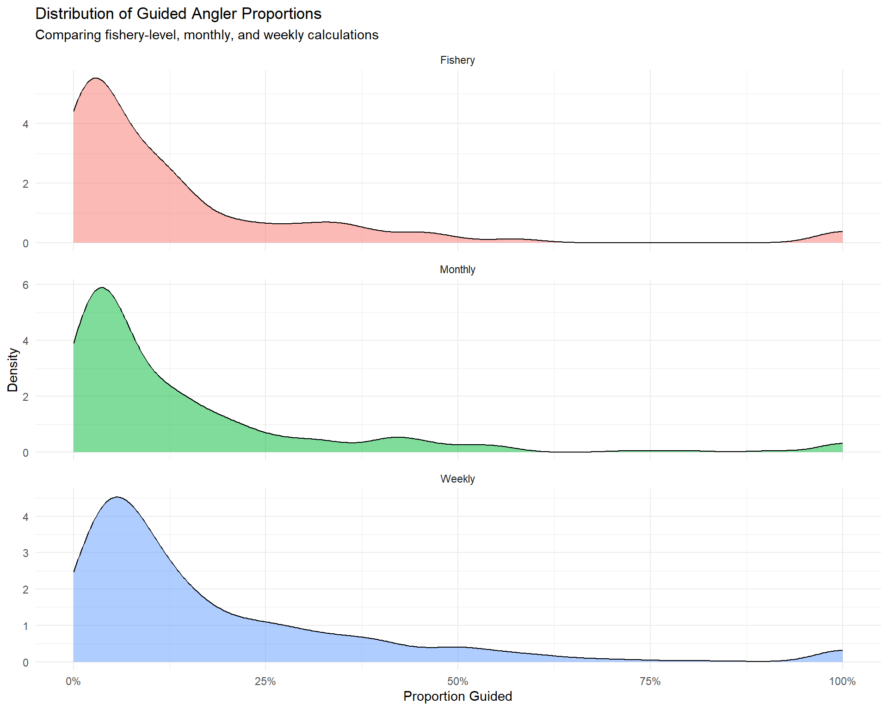
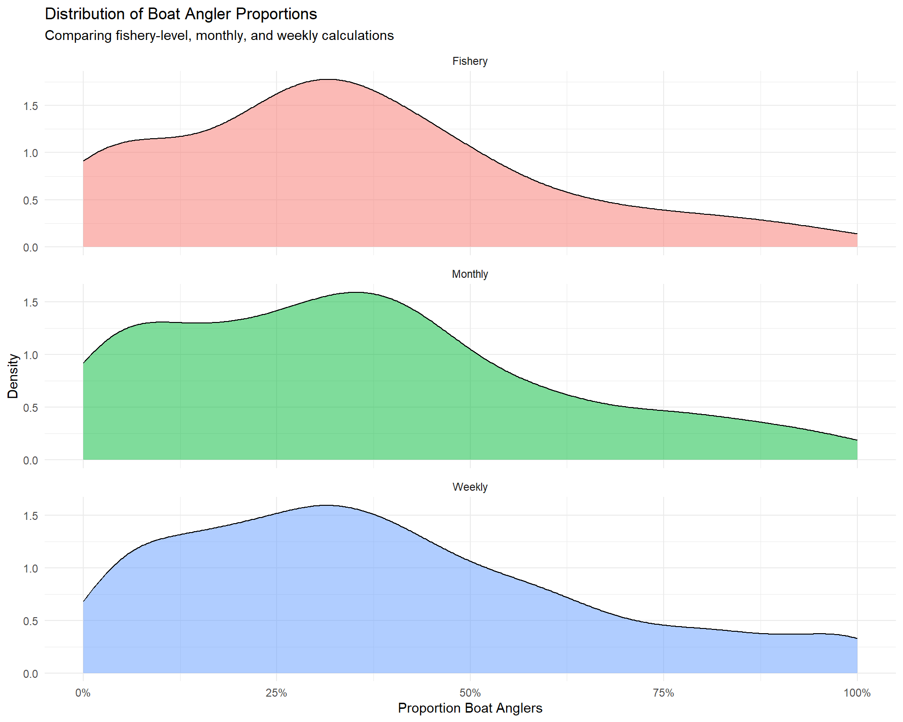
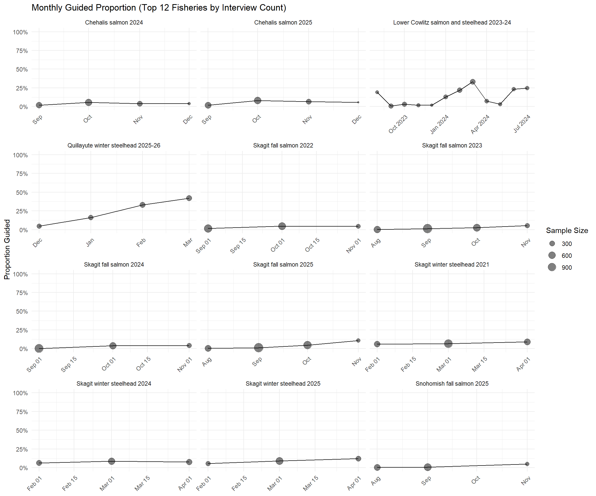
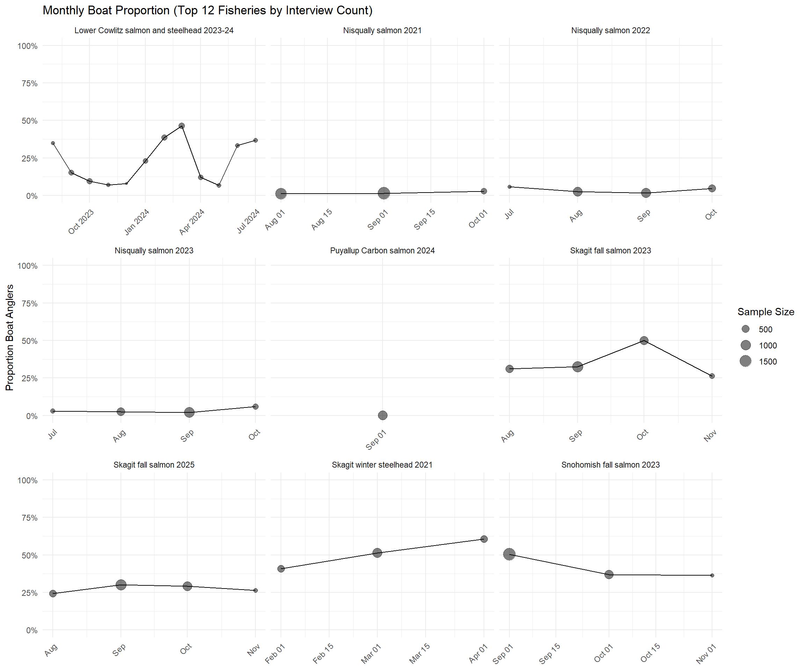
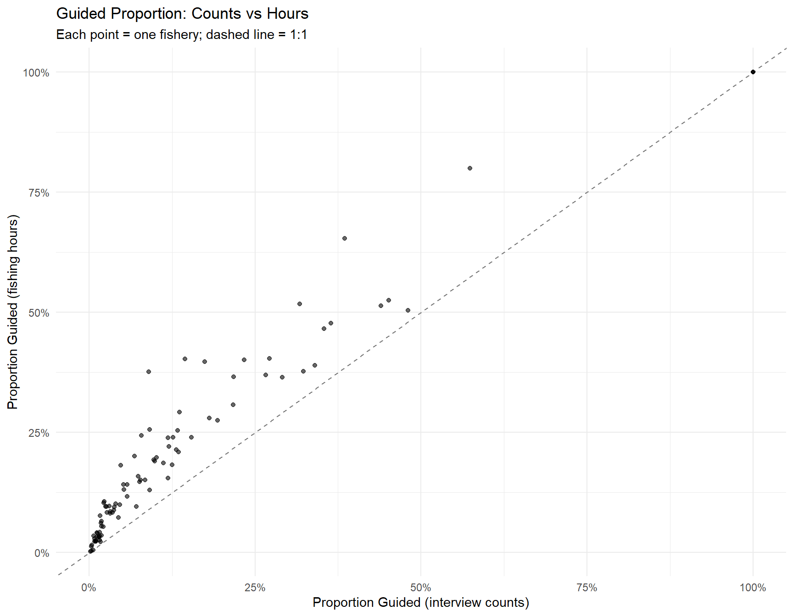
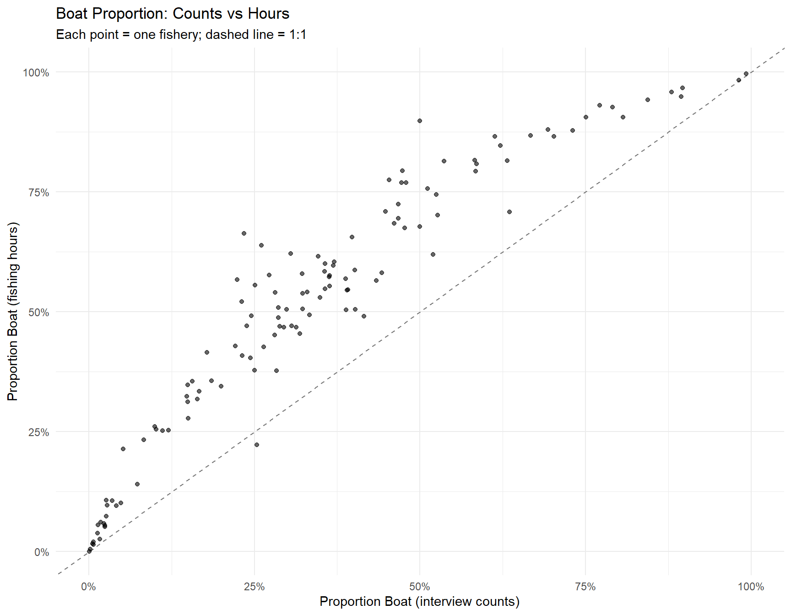
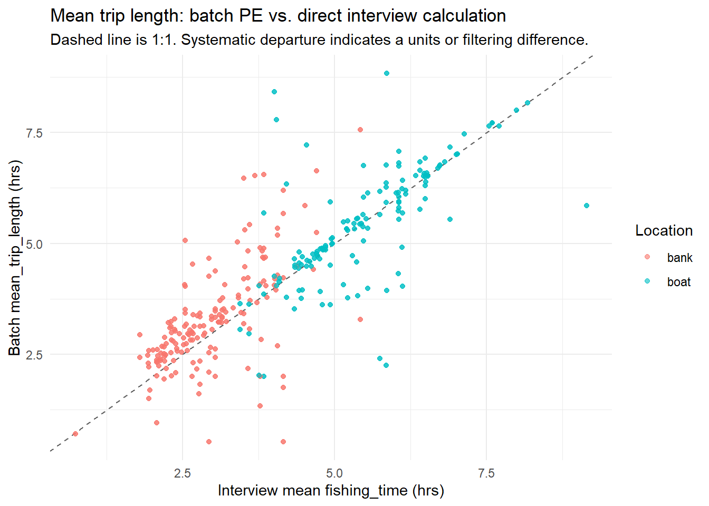

library(creelutils)
library(tidyverse)
library(readxl)
library(hms)
library(glue)
library(gt)
library(here)
library(DT)
# Create output directory for CSV exports
output_dir <- here::here("output")
if (!dir.exists(output_dir)) dir.create(output_dir, recursive = TRUE)
# Cache directory for raw data pulls
cache_dir <- here::here(".cache")
if (!dir.exists(cache_dir)) dir.create(cache_dir, recursive = TRUE)Briefing: Freshwater Recreational Effort by Mode & Location
Preparing for PST Economic Study Consultant Meeting
Setup
Background & Consultant Request
The U.S. has contracted with an economics consultant to assess the economic value of PST (Pacific Salmon Treaty) salmon fisheries. Commercial catch data and marine recreational fishing effort data are readily accessible, but freshwater recreational effort is more challenging to produce at the resolution requested.
What the Consultant Needs
For 2022 through 2025, the consultant has requested effort data in the following format:
| Field | Description |
|---|---|
| Year | Calendar year (2022–2025) |
| River | Individual river/system |
| Mode | Private (unguided) vs. Guided |
| Location | Boat vs. Bank |
| Angler Days | Total estimated angler trips |
Data Available Today
CRC-based freshwater trip estimates already exist as part of the NEPA analysis for our annual fishing package. The NEPA spreadsheet (NEPA PS_Recreational Effort Estimates 2025_2026_for 2026_2027 Projections_4_21_2026.xlsx) produces annual trip estimates by river and month using CRC salmon harvest multiplied by a trips-per-salmon-caught ratio (per 2013 NOAA memo). Two ratios were originally established:
| Year Type | Ratio | Rationale |
|---|---|---|
| Odd years (2021, 2023, 2025, 2027…) | 3.44 trips/salmon | Abundant Puget Sound pink salmon (a strongly odd-year dominant run) mean anglers catch many salmon per trip — so fewer trips are needed per salmon caught |
| Even years (2020, 2022, 2024, 2026…) | 8.65 trips/salmon | Pink salmon are nearly absent in even years; anglers rely on Chinook and coho alone, requiring ~2.5× more trips per salmon caught |
However, the “Even Effort” output column is blank (NA) in all available projection sheets (2018 through 2026), and the current Summary tab (cell A15) explicitly documents that only the odd-year ratio (3.44) is applied to all projections regardless of whether the target year is odd or even.
Using 3.44 for an even-year estimate (when 8.65 would be appropriate) understates effort by approximately 60% (3.44 ÷ 8.65 ≈ 0.40). This affects any 2022 and 2024 estimates provided to the consultant. These estimates cover ~54 Puget Sound freshwater systems but are reported as total trips only — they are not broken out by mode (guided/unguided) or location (bank/boat).
Warning
Action item: Confirm with the analyst whether the even-year ratio (8.65) should be reinstated for 2022 and 2024 estimates. Applying only the odd-year ratio (3.44) to even years likely understates freshwater effort by ~60% for those years — a potentially significant issue for the consultant’s economic valuation. Determine whether this was an intentional methodological decision and, if so, document the justification.
Creel interview data from WDFW’s internal database contains party-level records with guided status and bank/boat classification. These interviews do not cover all rivers, and sample sizes vary, but they provide the best available empirical basis for estimating the proportional split by mode and location.
Proposed Approach
Apply creel-interview-derived proportions (guided/unguided × bank/boat) to the CRC-based total trip estimates to produce the breakdown the consultant needs: \[ \text{Trips}_{river,\, mode,\, location} = \text{Total Trips}_{river} \times \hat{p}_{river,\, mode,\, location} \]
Where \(\hat{p}\) is the proportion of interviews in that combined category (e.g., Guided-Boat = 15% of interviews at that river → 15% of estimated trips are assigned to Guided-Boat).
Key considerations for the meeting:
- Coverage gap — Not all rivers with CRC trip estimates have creel interview data. For rivers without creel coverage, options include applying a regional/area-level proportion or a weighted average from similar rivers.
- Temporal resolution — Proportions can be applied at the fishery-wide level or monthly. The variability analysis below quantifies how much proportions shift over time.
- Years requested — The consultant wants 2022–2025. The NEPA spreadsheet currently has 2026/2027 projections and historical base years. We may need to reconstruct or locate the 2022–2025 estimates.
- Species scope — PST salmon only (excludes steelhead).
The remainder of this document derives the proportions from creel data, assesses their stability, and demonstrates the application approach using the 2026 NEPA trip projections as a worked example.
Open Issues: CRC Trip Estimate Methodology
The following issues with the CRC-based trip estimates themselves (i.e., the total trip numbers before any proportional split is applied) must be resolved before final estimates are delivered to the consultant.
| # | Issue | Impact | Action Required |
|---|---|---|---|
| 1 | Even-year trips/salmon ratio never applied — The NEPA workbook contains columns for the even-year ratio (8.65) but the “Even Effort” output is blank in all available sheets (2018–2026). Only the odd-year ratio (3.44) is used for all projections per Summary tab methodology note (cell A15). | Freshwater effort for even years (2022, 2024) is likely understated by ~60% (3.44 ÷ 8.65 ≈ 0.40). These are two of the four years the consultant requested. | Confirm with analyst whether use of 3.44 for even years was intentional or an oversight. If not intentional, regenerate 2022 and 2024 estimates using 8.65. Document the decision either way. |
| 2 | Historical estimates for 2022–2025 not in hand — The current NEPA workbook projects 2026/2027 and includes historical base-year data, but year-specific final estimates for 2022–2025 are not yet located. | Cannot deliver to consultant without these. | Locate previously-reported NEPA estimates for 2022–2025 seasons, or re-run the projection logic for those years. |
Open Issues: Applying Creel Proportions to CRC Estimates
The CRC trip estimate methodology does not use creel data — it derives total freshwater trips from CRC card counts and a trips-per-salmon ratio. The issues below concern how we apply creel-derived proportions to those totals to produce the mode × location breakdown the consultant needs.
| # | Issue | Impact | Action Required |
|---|---|---|---|
| 3 | River-to-creel crosswalk not yet established — Matching CRC rivers (e.g., “SKAGIT R.”) to creel fisheries (e.g., “Skagit River Summer Chinook”) is non-trivial; rivers may correspond to multiple fisheries (different species/runs) or have no creel coverage at all. | Cannot apply river-specific proportions without a validated crosswalk. The worked example below uses global (pooled) proportions as an interim approach. | Develop and manually verify a river-to-fishery crosswalk, prioritizing high-effort rivers. |
| 4 | Rivers without creel coverage rely on pooled proportions — Not all CRC rivers have been surveyed by creel programs. For these, the only option is a pooled or regional average proportion. | Pooled proportions may be poorly suited to specific systems (e.g., a predominantly guided fishery assigned an average with low guided share). | Evaluate regional (Catch Area) proportions as a more defensible fallback than an all-fisheries average. |
Methods
This analysis quantifies the proportions of guided vs. unguided and bank vs. boat anglers sampled during freshwater creel interviews across all WDFW fisheries with assigned fishery_name values. A third combined classification (guided-bank, guided-boat, unguided-bank, unguided-boat) provides the joint proportions most directly applicable to expanding estimated angler trips.
Data Source
Interview records are pulled from the WDFW PostgreSQL creel database via creelutils::fetch_data(data_source = "internal"). The full set of fishery names is obtained from creelutils::fishery_lut(). Each fishery’s interview table is retrieved individually and combined.
Classification Logic
- Guided status is derived from the
trip_guidedfield: “Guided” and “Non-guided” map directly; “Unknown” is treated as missing. - Bank/Boat uses
angler_typewhen populated (older datasets). For newer datasets,boat_used == "No"→ Bank;boat_used == "Yes"→ Boat, withfish_from_boat == "Bank"overriding to Bank for parties that had a boat but fished from shore. - Combined crosses the two classifications into four categories: Guided-Bank, Guided-Boat, Unguided-Bank, Unguided-Boat.
Proportion Metrics
Proportions are calculated two ways:
- Interview counts — each interview party counts as one unit.
- Fishing hours —
fishing_time × angler_count, where fishing time usesfishing_end_timefor complete trips andinterview_timeas a surrogate end for incomplete trips (followingprep_dwg_interview_fishing_time()).
Temporal Aggregation & Variability
Proportions are computed at three scales:
- Fishery-level (entire dataset for a fishery)
- Monthly (per fishery × calendar month)
- Weekly (per fishery × ISO week)
Variability (SD, CV, range) across units at each scale quantifies how stable these proportions are — informing whether a single fishery-wide proportion is sufficient or whether time-varying proportions should be applied to estimated trips.
Pull All Fishery Interview Data
cache_file <- file.path(cache_dir, "all_interviews.rds")
if (file.exists(cache_file)) {
cat("Loading cached interview data from", cache_file, "\n")
cat("Cache date:", format(file.mtime(cache_file), "%Y-%m-%d %H:%M"), "\n")
all_interviews <- readRDS(cache_file)
} else {
# Connect and get fishery names
conn <- connect_creel_db()
fishery_names <- fishery_lut(conn = conn) |>
pull(fishery_name) |>
unique()
cat(glue("{length(fishery_names)} fisheries found in fishery_lut\n\n"))
# Iterate over all fisheries and bind interview data
all_interviews <- purrr::map(
fishery_names,
\(fn) {
tryCatch(
{
dat <- fetch_data(
conn = conn,
fishery_name = fn,
tables = "interview",
data_source = "internal"
)
# Coerce all columns to character before binding to prevent
# type conflicts (logical from all-NA, double vs character, etc.)
dat$interview |>
mutate(across(everything(), as.character))
},
error = function(e) {
cli::cli_alert_warning("Failed for {fn}: {e$message}")
NULL
}
)
}
) |>
purrr::compact() |>
bind_rows()
DBI::dbDisconnect(conn)
# Save to cache
saveRDS(all_interviews, cache_file)
cat(glue("Cached {nrow(all_interviews)} rows to {cache_file}\n"))
}161 fisheries found in fishery_lut
Cached 88425 rows to C:/Users/booe1477/Code/CreelEstimates.worktrees/choremulti-fishery-summary/.cache/all_interviews.rdscat(glue("{nrow(all_interviews)} total interview records across {n_distinct(all_interviews$fishery_name)} fisheries\n"))88425 total interview records across 148 fisheries# Persist alongside the pipeline's other outputs, not just .cache/. The cache
# exists purely to skip a slow DB pull on re-render and is expected to be
# deleted/ignored; analysis/outputs/ is where every other script in this repo
# (multi_fishery_trip_summary.R, the CRC parser, etc.) writes what it actually
# produces, and downstream users shouldn't have to know this document has its
# own separate cache directory to find the underlying interview data.
persist_dir <- here::here("analysis", "outputs")
if (!dir.exists(persist_dir)) dir.create(persist_dir, recursive = TRUE)
saveRDS(all_interviews, file.path(persist_dir, "all_interviews.rds"))
write_csv(all_interviews, file.path(persist_dir, "all_interviews.csv"))
cat(glue("Persisted {nrow(all_interviews)} rows to ",
"{file.path(persist_dir, 'all_interviews.{rds,csv}')}\n"))Persisted 88425 rows to C:/Users/booe1477/Code/CreelEstimates.worktrees/choremulti-fishery-summary/analysis/outputs/all_interviews.{rds,csv}
Tip
To force a fresh pull from the database, delete .cache/all_interviews.rds and re-render.
Assign Season-Level fishery_name for R3 Rivers
Hanford Reach, Yakima River, and McNary Dam are in the internal creel database and should already be included in all_interviews from the standard pull above. The first version of this section assumed fishery_lut() tags these rows with a fishery_name that literally contains “Hanford” / “Yakima” / “McNary” — the way most other rivers’ LUT entries do — and matched against that field. It matched zero rows. That means one of two things, and the diagnostic chunk below distinguishes them instead of guessing again:
fishery_namefor these rows holds something else (a code, an ID, a different label) while the identifying text lives in a different column —project_nameandwater_bodyare the two strong candidates, because those are exactly the fields that carried “Hanford” / “Yakima” / “McNary” in the raw export we inspected earlier, and iffetch_data()returns the same underlyinginterviewtable schema regardless of which fishery triggered the pull, those columns should already be sitting inall_interviewsunused.- These three rivers were never pulled into
all_interviewsat all — i.e. they’re in the database but not registered infishery_lut(), so the per-fishery loop above never queried for them, and there’s nothing here to reassign regardless of which field we match on.
Diagnose before reassigning
river_terms <- c("Hanford", "Yakima", "McNary")
river_regex <- regex(paste(river_terms, collapse = "|"), ignore_case = TRUE)
candidate_cols <- intersect(
c("fishery_name", "project_name", "water_body", "fishing_location",
"interview_location"),
names(all_interviews)
)
cat(glue("Candidate columns present in all_interviews: ",
"{paste(candidate_cols, collapse = ', ')}\n\n"))Candidate columns present in all_interviews: fishery_name, project_name, water_body, fishing_location, interview_locationfor (col in candidate_cols) {
hits <- all_interviews |>
filter(str_detect(.data[[col]], river_regex)) |>
nrow()
cat(glue(" {col}: {hits} rows match Hanford/Yakima/McNary\n"))
}fishery_name: 0 rows match Hanford/Yakima/McNaryproject_name: 0 rows match Hanford/Yakima/McNarywater_body: 0 rows match Hanford/Yakima/McNaryfishing_location: 0 rows match Hanford/Yakima/McNaryinterview_location: 0 rows match Hanford/Yakima/McNarycat("\nDistinct values, columns most likely to hold the label ",
"(project_name, water_body), that themselves mention any river term:\n")
Distinct values, columns most likely to hold the label (project_name, water_body), that themselves mention any river term:for (col in intersect(c("project_name", "water_body"), candidate_cols)) {
vals <- all_interviews |>
filter(str_detect(.data[[col]], river_regex)) |>
distinct(.data[[col]]) |>
pull(.data[[col]])
cat(glue(" {col}: {paste(vals, collapse = ' | ')}\n"))
}project_name: water_body: # If literally nothing above matched anything, these fisheries were never
# pulled - check fishery_lut() itself rather than all_interviews, since that
# tells us whether the gap is in the loop's source list or in our field
# matching.
if (sum(map_int(candidate_cols, \(col)
all_interviews |> filter(str_detect(.data[[col]], river_regex)) |> nrow())) == 0) {
cli::cli_alert_danger(paste(
"Zero matches on ANY candidate column. These fisheries likely weren't",
"pulled into all_interviews at all - check fishery_lut() directly:"
))
tryCatch({
conn_chk <- connect_creel_db()
lut_full <- fishery_lut(conn = conn_chk)
DBI::dbDisconnect(conn_chk)
lut_hits <- lut_full |>
filter(if_any(where(is.character), \(x) str_detect(x, river_regex)))
cat(glue("fishery_lut() rows matching Hanford/Yakima/McNary: {nrow(lut_hits)}\n"))
print(lut_hits)
}, error = function(e) {
cli::cli_alert_warning("Couldn't re-check fishery_lut(): {e$message}")
})
}fishery_lut() rows matching Hanford/Yakima/McNary: 0# A tibble: 0 × 10
# ℹ 10 variables: fishery_id <chr>, fishery_name <chr>, year <int>,
# fishery_start_date <date>, fishery_end_date <date>,
# created_datetime <dttm>, created_by <chr>, modified_datetime <dttm>,
# modified_by <chr>, project_id <chr>Reassign using whichever field carries the label
Matches on the first candidate column (in priority order project_name → water_body → fishery_name) that actually contains a river term for a given row, rather than assuming which one in advance. This is deliberately over-cautious — if the diagnostic above shows zero matches everywhere, this chunk will also assign zero and that’s the correct, honest outcome; it isn’t silently papering over the gap identified in case 2 above.
# river substring (case-insensitive) -> fishery_name template. Mirrors
# pst_river_block_crosswalk.csv (source_id == "R3_external") exactly.
r3_fishery_template <- tribble(
~river_pattern, ~fishery_name_template,
"Hanford", "Hanford Reach fall Chinook {year}",
"Yakima", "Yakima fall salmon {year}",
"McNary", "McNary Reservoir fall salmon {year}"
)
r3_tmpl <- deframe(r3_fishery_template)
# Build one "label text" column by coalescing whichever identifying fields
# exist and are non-empty, in priority order. This is what gets pattern-
# matched, instead of assuming fishery_name specifically.
id_cols <- intersect(c("project_name", "water_body", "fishery_name"),
names(all_interviews))
all_interviews <- all_interviews |>
mutate(
.r3_label = coalesce(!!!syms(id_cols)),
.r3_year = as.character(year(as.Date(event_date))),
fishery_name = case_when(
str_detect(.r3_label, regex("Hanford", ignore_case = TRUE)) ~
str_replace(r3_tmpl[["Hanford"]], "\\{year\\}", .r3_year),
str_detect(.r3_label, regex("Yakima", ignore_case = TRUE)) ~
str_replace(r3_tmpl[["Yakima"]], "\\{year\\}", .r3_year),
str_detect(.r3_label, regex("McNary", ignore_case = TRUE)) ~
str_replace(r3_tmpl[["McNary"]], "\\{year\\}", .r3_year),
TRUE ~ fishery_name
)
) |>
select(-.r3_label, -.r3_year)
n_r3 <- all_interviews |>
filter(str_detect(fishery_name,
regex(paste(r3_fishery_template$river_pattern,
collapse = "|"), ignore_case = TRUE))) |>
nrow()
cat(glue("{n_r3} interview rows assigned a season-level fishery_name ",
"for Hanford Reach / Yakima / McNary ",
"(matched via: {paste(id_cols, collapse = ', ')})\n\n"))0 interview rows assigned a season-level fishery_name for Hanford Reach / Yakima / McNary (matched via: project_name, water_body, fishery_name)if (n_r3 == 0) {
cli::cli_alert_danger(paste(
"Still zero. See the diagnose-r3-fields chunk above for which field, if",
"any, actually carries the river label - if fishery_lut() itself showed",
"no matching entries, these three fisheries aren't reachable through",
"the standard per-fishery loop and need a different pull mechanism",
"(e.g. a direct interview-table query by project/water_body rather than",
"by fishery_name), not a smarter regex here."
))
}Validate against the crosswalk
crosswalk_path <- here::here(
"input_files", "pst", "pst_river_block_crosswalk.csv"
)
if (file.exists(crosswalk_path)) {
crosswalk_names <- read_csv(crosswalk_path, show_col_types = FALSE) |>
filter(source_id == "R3_external") |>
pull(fishery_name)
derived_names <- all_interviews |>
filter(str_detect(fishery_name,
regex(paste(r3_fishery_template$river_pattern,
collapse = "|"), ignore_case = TRUE))) |>
distinct(fishery_name) |>
pull(fishery_name)
missing_from_crosswalk <- setdiff(derived_names, crosswalk_names)
missing_from_interviews <- setdiff(crosswalk_names, derived_names)
cat(glue("{length(derived_names)} fishery-years derived from interviews, ",
"{length(crosswalk_names)} in the crosswalk\n\n"))
if (length(missing_from_crosswalk) > 0) {
cli::cli_alert_warning(paste(
"fishery_name values assigned from the internal pull but NOT in",
"pst_river_block_crosswalk.csv — add these or check the template:"
))
print(missing_from_crosswalk)
}
if (length(missing_from_interviews) > 0) {
cli::cli_alert_info(paste(
"crosswalk fishery-years with no interviews pulled",
"(expected for years/rivers not yet in the internal database):"
))
print(missing_from_interviews)
}
if (length(missing_from_crosswalk) == 0) {
cat("All derived fishery_name values match the crosswalk.\n")
}
} else {
cli::cli_alert_warning("Crosswalk not found at {crosswalk_path} — skipping validation")
}
Note
Expected structural gap, not a bug. trip_guided is NA for essentially every Hanford Reach / Yakima / McNary interview — WDFW Region 3’s programs don’t collect a guided/unguided field, which matches what’s already documented in pst_input_manifest.csv and the crosswalk ("no guided/unguided field collected - structural gap"). These three fisheries will show guided_status entirely missing in the coverage tables below; that’s correct, and downstream (pst_fw_effort_assembly.R) already treats it as mode_basis = "not_collected" rather than an unstated zero.
angler_type (Bank/Boat), by contrast, is populated. Location proportions for Hanford Reach, Yakima, and McNary compute from the same interview pull as every other fishery, rather than resting on a separate boat-harvest model.
Derive Classification Fields
The interview view contains:
trip_guided: “Guided” / “Non-guided” / “Unknown” (newer fisheries)angler_type: “Bank” / “Boat” / “Unk” (older fisheries, direct classification)boat_used: “Yes” / “No” (newer fisheries)fish_from_boat: “Boat” / “Bank” (supplement for parties with boats)boat_type: vessel detail (Pontoon/Kayak/Drift Boat/Motorized)
Bank/boat derivation follows the logic in prep_dwg_interview_angler_types(): older datasets use angler_type directly; newer datasets derive from boat_used.
Fishing hours follow prep_dwg_interview_fishing_time(): for incomplete trips or missing end times, interview_time substitutes as the end time. Total fishing hours = per-party fishing time × angler count.
# Helper: safely parse HH:MM:SS strings to hms; returns NA on failure
safe_hms <- function(x) {
out <- suppressWarnings(hms::as_hms(x))
out[is.nan(as.numeric(out))] <- NA
out
}
interviews <- all_interviews |>
# Normalize sentinel strings ("NA", "", whitespace-only) to proper NA
mutate(across(everything(), ~ if_else(.x %in% c("NA", "", " "), NA_character_, .x))) |>
mutate(
event_date = as.Date(event_date),
year = year(event_date),
month = floor_date(event_date, "month"),
week = floor_date(event_date, "week"),
# Guided status: standardize trip_guided to binary
guided_status = case_when(
trip_guided == "Guided" ~ "Guided",
trip_guided == "Non-guided" ~ "Unguided",
TRUE ~ NA_character_
),
# Bank/Boat: use angler_type if available, otherwise derive from boat_used
angler_final = case_when(
# Older datasets with direct angler_type classification
!is.na(angler_type) & angler_type == "Bank" ~ "Bank",
!is.na(angler_type) & angler_type == "Boat" ~ "Boat",
# Newer datasets: derive from boat_used
boat_used == "No" ~ "Bank",
boat_used == "Yes" & fish_from_boat == "Bank" ~ "Bank",
boat_used == "Yes" ~ "Boat",
TRUE ~ NA_character_
),
# Fishing time (hours) per CreelEstimates methodology:
# Use fishing_end_time for complete trips; interview_time for incomplete/missing
trip_status = tidyr::replace_na(trip_status, "Unknown"),
end_time_final = if_else(
trip_status == "Incomplete" | is.na(fishing_end_time),
interview_time,
fishing_end_time
),
# Safe time parsing — returns NA for malformed/empty strings
fishing_time = as.numeric(
safe_hms(end_time_final) - safe_hms(fishing_start_time)
) / 3600,
# Angler count: treat <= 0 as missing (e.g., -1 means "not recorded")
angler_count_num = as.numeric(angler_count),
angler_count_num = if_else(angler_count_num <= 0, NA_real_, angler_count_num),
# Total fishing hours = fishing_time * angler_count
fishing_time_total = fishing_time * angler_count_num
) |>
# Drop rows with non-positive or missing fishing time
mutate(
fishing_time_total = if_else(
is.na(fishing_time_total) | fishing_time_total <= 0,
NA_real_,
fishing_time_total
)
)
# Summary of field coverage
cat("Guided status coverage:\n")Guided status coverage:interviews |> count(guided_status) |> print()# A tibble: 3 × 2
guided_status n
<chr> <int>
1 Guided 4892
2 Unguided 53463
3 <NA> 30070cat("\nBank/Boat coverage:\n")
Bank/Boat coverage:interviews |> count(angler_final) |> print()# A tibble: 3 × 2
angler_final n
<chr> <int>
1 Bank 61348
2 Boat 26996
3 <NA> 81cat("\nFishing time total (hours) summary:\n")
Fishing time total (hours) summary:summary(interviews$fishing_time_total) |> print() Min. 1st Qu. Median Mean 3rd Qu. Max. NA's
0.01667 2.48333 5.00000 7.72560 10.43333 106.20000 382 Fisheries Included
fishery_summary <- interviews |>
group_by(fishery_name) |>
summarise(
n_interviews = n(),
date_range = paste(min(event_date, na.rm = TRUE), "to", max(event_date, na.rm = TRUE)),
pct_guided_recorded = round(100 * mean(!is.na(guided_status)), 1),
pct_bank_boat_recorded = round(100 * mean(!is.na(angler_final)), 1),
pct_hours_available = round(100 * mean(!is.na(fishing_time_total)), 1),
.groups = "drop"
) |>
arrange(fishery_name)
cat(glue("{nrow(fishery_summary)} fisheries included in analysis\n"))148 fisheries included in analysisfishery_summary |>
datatable(
caption = "Fisheries included in analysis (searchable)",
filter = "top",
rownames = FALSE,
options = list(pageLength = 15, autoWidth = TRUE),
colnames = c(
"Fishery" = "fishery_name",
"Interviews" = "n_interviews",
"Date Range" = "date_range",
"% Guided/Unguided Recorded" = "pct_guided_recorded",
"% Bank/Boat Recorded" = "pct_bank_boat_recorded",
"% Hours Available" = "pct_hours_available"
)
)Calculate Proportions (Interview Counts)
Fishery-Level Proportions (Counts)
# Guided vs Unguided proportions by fishery
guide_fishery <- interviews |>
filter(!is.na(guided_status)) |>
count(fishery_name, guided_status) |>
group_by(fishery_name) |>
mutate(total = sum(n), prop = n / total) |>
ungroup()
# Bank vs Boat proportions by fishery
type_fishery <- interviews |>
filter(!is.na(angler_final)) |>
count(fishery_name, angler_final) |>
group_by(fishery_name) |>
mutate(total = sum(n), prop = n / total) |>
ungroup()
# Export
write_csv(guide_fishery, file.path(output_dir, "guide_proportions_fishery.csv"))
write_csv(type_fishery, file.path(output_dir, "type_proportions_fishery.csv"))Monthly Proportions (Counts)
guide_monthly <- interviews |>
filter(!is.na(guided_status)) |>
count(fishery_name, month, guided_status) |>
group_by(fishery_name, month) |>
mutate(total = sum(n), prop = n / total) |>
ungroup()
type_monthly <- interviews |>
filter(!is.na(angler_final)) |>
count(fishery_name, month, angler_final) |>
group_by(fishery_name, month) |>
mutate(total = sum(n), prop = n / total) |>
ungroup()
# Export
write_csv(guide_monthly, file.path(output_dir, "guide_proportions_monthly.csv"))
write_csv(type_monthly, file.path(output_dir, "type_proportions_monthly.csv"))Weekly Proportions (Counts)
guide_weekly <- interviews |>
filter(!is.na(guided_status)) |>
count(fishery_name, week, guided_status) |>
group_by(fishery_name, week) |>
mutate(total = sum(n), prop = n / total) |>
ungroup()
type_weekly <- interviews |>
filter(!is.na(angler_final)) |>
count(fishery_name, week, angler_final) |>
group_by(fishery_name, week) |>
mutate(total = sum(n), prop = n / total) |>
ungroup()
# Export
write_csv(guide_weekly, file.path(output_dir, "guide_proportions_weekly.csv"))
write_csv(type_weekly, file.path(output_dir, "type_proportions_weekly.csv"))Calculate Proportions (Combined: Guide × Bank/Boat)
Cross-classification of guided status and angler type into four categories most applicable to expanding estimated angler trips.
# Create combined category
interviews <- interviews |>
mutate(
combined_type = case_when(
!is.na(guided_status) & !is.na(angler_final) ~
paste(guided_status, angler_final, sep = "-"),
TRUE ~ NA_character_
)
)
cat("Combined type coverage:\n")Combined type coverage:interviews |> count(combined_type) |> print()# A tibble: 5 × 2
combined_type n
<chr> <int>
1 Guided-Bank 824
2 Guided-Boat 4068
3 Unguided-Bank 34179
4 Unguided-Boat 19273
5 <NA> 30081Fishery-Level (Combined, Counts)
combined_fishery <- interviews |>
filter(!is.na(combined_type)) |>
count(fishery_name, combined_type) |>
complete(fishery_name, combined_type, fill = list(n = 0L)) |>
group_by(fishery_name) |>
mutate(total = sum(n), prop = n / total) |>
ungroup()
write_csv(combined_fishery, file.path(output_dir, "combined_proportions_fishery.csv"))Monthly (Combined, Counts)
combined_monthly <- interviews |>
filter(!is.na(combined_type)) |>
count(fishery_name, month, combined_type) |>
complete(nesting(fishery_name, month), combined_type, fill = list(n = 0L)) |>
group_by(fishery_name, month) |>
mutate(total = sum(n), prop = n / total) |>
ungroup()
write_csv(combined_monthly, file.path(output_dir, "combined_proportions_monthly.csv"))Weekly (Combined, Counts)
combined_weekly <- interviews |>
filter(!is.na(combined_type)) |>
count(fishery_name, week, combined_type) |>
complete(nesting(fishery_name, week), combined_type, fill = list(n = 0L)) |>
group_by(fishery_name, week) |>
mutate(total = sum(n), prop = n / total) |>
ungroup()
write_csv(combined_weekly, file.path(output_dir, "combined_proportions_weekly.csv"))Fishery-Level (Combined, Hours)
combined_fishery_hrs <- interviews |>
filter(!is.na(combined_type), !is.na(fishing_time_total)) |>
group_by(fishery_name, combined_type) |>
summarise(hours = sum(fishing_time_total), .groups = "drop") |>
complete(fishery_name, combined_type, fill = list(hours = 0)) |>
group_by(fishery_name) |>
mutate(total_hours = sum(hours), prop = hours / total_hours) |>
ungroup()
write_csv(combined_fishery_hrs, file.path(output_dir, "combined_proportions_fishery_hrs.csv"))Monthly (Combined, Hours)
combined_monthly_hrs <- interviews |>
filter(!is.na(combined_type), !is.na(fishing_time_total)) |>
group_by(fishery_name, month, combined_type) |>
summarise(hours = sum(fishing_time_total), .groups = "drop") |>
complete(nesting(fishery_name, month), combined_type, fill = list(hours = 0)) |>
group_by(fishery_name, month) |>
mutate(total_hours = sum(hours), prop = hours / total_hours) |>
ungroup()
write_csv(combined_monthly_hrs, file.path(output_dir, "combined_proportions_monthly_hrs.csv"))Weekly (Combined, Hours)
combined_weekly_hrs <- interviews |>
filter(!is.na(combined_type), !is.na(fishing_time_total)) |>
group_by(fishery_name, week, combined_type) |>
summarise(hours = sum(fishing_time_total), .groups = "drop") |>
complete(nesting(fishery_name, week), combined_type, fill = list(hours = 0)) |>
group_by(fishery_name, week) |>
mutate(total_hours = sum(hours), prop = hours / total_hours) |>
ungroup()
write_csv(combined_weekly_hrs, file.path(output_dir, "combined_proportions_weekly_hrs.csv"))Searchable Fishery Proportion Table (Combined)
# Wide-format summary: one row per fishery with proportions for each combined type
combined_wide <- combined_fishery |>
select(fishery_name, combined_type, n, total, prop) |>
pivot_wider(
names_from = combined_type,
values_from = c(n, prop),
names_glue = "{combined_type}_{.value}"
) |>
rename(total_interviews = total) |>
distinct()
# Also join hours-based proportions
combined_wide_hrs <- combined_fishery_hrs |>
select(fishery_name, combined_type, prop) |>
pivot_wider(
names_from = combined_type,
values_from = prop,
names_prefix = "hrs_"
)
combined_summary <- combined_wide |>
left_join(combined_wide_hrs, by = "fishery_name")
write_csv(combined_summary, file.path(output_dir, "combined_proportions_summary.csv"))
combined_summary |>
datatable(
caption = "Combined guided × bank/boat proportions by fishery (searchable)",
filter = "top",
rownames = FALSE,
options = list(pageLength = 15, scrollX = TRUE, autoWidth = TRUE)
) |>
formatPercentage(columns = grep("prop|hrs_", names(combined_summary), value = TRUE), digits = 1)Calculate Proportions (Fishing Hours)
Proportions based on total angler fishing hours (fishing_time × angler_count) per prep_dwg_interview_fishing_time().
Fishery-Level Proportions (Hours)
# Guided vs Unguided by total fishing hours
guide_fishery_hrs <- interviews |>
filter(!is.na(guided_status), !is.na(fishing_time_total)) |>
group_by(fishery_name, guided_status) |>
summarise(hours = sum(fishing_time_total), .groups = "drop") |>
group_by(fishery_name) |>
mutate(total_hours = sum(hours), prop = hours / total_hours) |>
ungroup()
# Bank vs Boat by total fishing hours
type_fishery_hrs <- interviews |>
filter(!is.na(angler_final), !is.na(fishing_time_total)) |>
group_by(fishery_name, angler_final) |>
summarise(hours = sum(fishing_time_total), .groups = "drop") |>
group_by(fishery_name) |>
mutate(total_hours = sum(hours), prop = hours / total_hours) |>
ungroup()
# Export
write_csv(guide_fishery_hrs, file.path(output_dir, "guide_proportions_fishery_hrs.csv"))
write_csv(type_fishery_hrs, file.path(output_dir, "type_proportions_fishery_hrs.csv"))Monthly Proportions (Hours)
guide_monthly_hrs <- interviews |>
filter(!is.na(guided_status), !is.na(fishing_time_total)) |>
group_by(fishery_name, month, guided_status) |>
summarise(hours = sum(fishing_time_total), .groups = "drop") |>
group_by(fishery_name, month) |>
mutate(total_hours = sum(hours), prop = hours / total_hours) |>
ungroup()
type_monthly_hrs <- interviews |>
filter(!is.na(angler_final), !is.na(fishing_time_total)) |>
group_by(fishery_name, month, angler_final) |>
summarise(hours = sum(fishing_time_total), .groups = "drop") |>
group_by(fishery_name, month) |>
mutate(total_hours = sum(hours), prop = hours / total_hours) |>
ungroup()
# Export
write_csv(guide_monthly_hrs, file.path(output_dir, "guide_proportions_monthly_hrs.csv"))
write_csv(type_monthly_hrs, file.path(output_dir, "type_proportions_monthly_hrs.csv"))Weekly Proportions (Hours)
guide_weekly_hrs <- interviews |>
filter(!is.na(guided_status), !is.na(fishing_time_total)) |>
group_by(fishery_name, week, guided_status) |>
summarise(hours = sum(fishing_time_total), .groups = "drop") |>
group_by(fishery_name, week) |>
mutate(total_hours = sum(hours), prop = hours / total_hours) |>
ungroup()
type_weekly_hrs <- interviews |>
filter(!is.na(angler_final), !is.na(fishing_time_total)) |>
group_by(fishery_name, week, angler_final) |>
summarise(hours = sum(fishing_time_total), .groups = "drop") |>
group_by(fishery_name, week) |>
mutate(total_hours = sum(hours), prop = hours / total_hours) |>
ungroup()
# Export
write_csv(guide_weekly_hrs, file.path(output_dir, "guide_proportions_weekly_hrs.csv"))
write_csv(type_weekly_hrs, file.path(output_dir, "type_proportions_weekly_hrs.csv"))Variability Analysis
Compare the spread of proportions when calculated at different temporal aggregations (entire fishery vs monthly vs weekly).
# Helper to safely summarise proportions (returns NA row if no data)
summarise_variability <- function(df, scale_label) {
if (nrow(df) == 0) {
return(tibble(
scale = scale_label, mean_prop = NA_real_, sd_prop = NA_real_,
cv = NA_real_, min_prop = NA_real_, max_prop = NA_real_, n_units = 0L
))
}
df |> summarise(
scale = scale_label,
mean_prop = mean(prop, na.rm = TRUE),
sd_prop = sd(prop, na.rm = TRUE),
cv = sd_prop / mean_prop,
min_prop = min(prop, na.rm = TRUE),
max_prop = max(prop, na.rm = TRUE),
n_units = n()
)
}
# Guided proportion variability across scales
guide_variability <- bind_rows(
guide_fishery |> filter(guided_status == "Guided") |> summarise_variability("Fishery (overall)"),
guide_monthly |> filter(guided_status == "Guided") |> summarise_variability("Monthly"),
guide_weekly |> filter(guided_status == "Guided") |> summarise_variability("Weekly")
)
# Boat proportion variability across scales
type_variability <- bind_rows(
type_fishery |> filter(angler_final == "Boat") |> summarise_variability("Fishery (overall)"),
type_monthly |> filter(angler_final == "Boat") |> summarise_variability("Monthly"),
type_weekly |> filter(angler_final == "Boat") |> summarise_variability("Weekly")
)Variability Tables
guide_variability |>
gt() |>
fmt_number(columns = c(mean_prop, sd_prop, cv, min_prop, max_prop), decimals = 3) |>
cols_label(
scale = "Scale",
mean_prop = "Mean Proportion",
sd_prop = "SD",
cv = "CV",
min_prop = "Min",
max_prop = "Max",
n_units = "N (units)"
)| Scale | Mean Proportion | SD | CV | Min | Max | N (units) |
|---|---|---|---|---|---|---|
| Fishery (overall) | 0.139 | 0.202 | 1.456 | 0.002 | 1.000 | 92 |
| Monthly | 0.147 | 0.200 | 1.365 | 0.002 | 1.000 | 245 |
| Weekly | 0.183 | 0.208 | 1.134 | 0.003 | 1.000 | 708 |
type_variability |>
gt() |>
fmt_number(columns = c(mean_prop, sd_prop, cv, min_prop, max_prop), decimals = 3) |>
cols_label(
scale = "Scale",
mean_prop = "Mean Proportion",
sd_prop = "SD",
cv = "CV",
min_prop = "Min",
max_prop = "Max",
n_units = "N (units)"
)
# Export variability summaries
write_csv(guide_variability, file.path(output_dir, "guide_variability_summary.csv"))
write_csv(type_variability, file.path(output_dir, "type_variability_summary.csv"))| Scale | Mean Proportion | SD | CV | Min | Max | N (units) |
|---|---|---|---|---|---|---|
| Fishery (overall) | 0.344 | 0.239 | 0.693 | 0.000 | 0.993 | 123 |
| Monthly | 0.361 | 0.252 | 0.700 | 0.001 | 1.000 | 338 |
| Weekly | 0.388 | 0.259 | 0.666 | 0.003 | 1.000 | 1159 |
Variability Tables (Fishing Hours)
# Guided proportion variability by fishing hours
guide_variability_hrs <- bind_rows(
guide_fishery_hrs |> filter(guided_status == "Guided") |> summarise_variability("Fishery (overall)"),
guide_monthly_hrs |> filter(guided_status == "Guided") |> summarise_variability("Monthly"),
guide_weekly_hrs |> filter(guided_status == "Guided") |> summarise_variability("Weekly")
)
# Boat proportion variability by fishing hours
type_variability_hrs <- bind_rows(
type_fishery_hrs |> filter(angler_final == "Boat") |> summarise_variability("Fishery (overall)"),
type_monthly_hrs |> filter(angler_final == "Boat") |> summarise_variability("Monthly"),
type_weekly_hrs |> filter(angler_final == "Boat") |> summarise_variability("Weekly")
)guide_variability_hrs |>
gt() |>
fmt_number(columns = c(mean_prop, sd_prop, cv, min_prop, max_prop), decimals = 3) |>
cols_label(
scale = "Scale",
mean_prop = "Mean Proportion",
sd_prop = "SD",
cv = "CV",
min_prop = "Min",
max_prop = "Max",
n_units = "N (units)"
)| Scale | Mean Proportion | SD | CV | Min | Max | N (units) |
|---|---|---|---|---|---|---|
| Fishery (overall) | 0.212 | 0.219 | 1.030 | 0.002 | 1.000 | 92 |
| Monthly | 0.231 | 0.224 | 0.971 | 0.000 | 1.000 | 244 |
| Weekly | 0.283 | 0.234 | 0.826 | 0.001 | 1.000 | 707 |
type_variability_hrs |>
gt() |>
fmt_number(columns = c(mean_prop, sd_prop, cv, min_prop, max_prop), decimals = 3) |>
cols_label(
scale = "Scale",
mean_prop = "Mean Proportion",
sd_prop = "SD",
cv = "CV",
min_prop = "Min",
max_prop = "Max",
n_units = "N (units)"
)
# Export
write_csv(guide_variability_hrs, file.path(output_dir, "guide_variability_summary_hrs.csv"))
write_csv(type_variability_hrs, file.path(output_dir, "type_variability_summary_hrs.csv"))| Scale | Mean Proportion | SD | CV | Min | Max | N (units) |
|---|---|---|---|---|---|---|
| Fishery (overall) | 0.512 | 0.270 | 0.529 | 0.000 | 0.996 | 123 |
| Monthly | 0.526 | 0.274 | 0.522 | 0.001 | 1.000 | 338 |
| Weekly | 0.556 | 0.272 | 0.490 | 0.003 | 1.000 | 1158 |
Counts vs Hours Comparison
bind_rows(
guide_variability |> mutate(metric = "Guided (counts)", .before = 1),
guide_variability_hrs |> mutate(metric = "Guided (hours)", .before = 1),
type_variability |> mutate(metric = "Boat (counts)", .before = 1),
type_variability_hrs |> mutate(metric = "Boat (hours)", .before = 1)
) |>
select(metric, scale, mean_prop, cv, n_units) |>
gt() |>
fmt_number(columns = c(mean_prop, cv), decimals = 3) |>
cols_label(
metric = "Metric",
scale = "Scale",
mean_prop = "Mean Proportion",
cv = "CV",
n_units = "N"
)| Metric | Scale | Mean Proportion | CV | N |
|---|---|---|---|---|
| Guided (counts) | Fishery (overall) | 0.139 | 1.456 | 92 |
| Guided (counts) | Monthly | 0.147 | 1.365 | 245 |
| Guided (counts) | Weekly | 0.183 | 1.134 | 708 |
| Guided (hours) | Fishery (overall) | 0.212 | 1.030 | 92 |
| Guided (hours) | Monthly | 0.231 | 0.971 | 244 |
| Guided (hours) | Weekly | 0.283 | 0.826 | 707 |
| Boat (counts) | Fishery (overall) | 0.344 | 0.693 | 123 |
| Boat (counts) | Monthly | 0.361 | 0.700 | 338 |
| Boat (counts) | Weekly | 0.388 | 0.666 | 1159 |
| Boat (hours) | Fishery (overall) | 0.512 | 0.529 | 123 |
| Boat (hours) | Monthly | 0.526 | 0.522 | 338 |
| Boat (hours) | Weekly | 0.556 | 0.490 | 1158 |
Combined (Guide × Bank/Boat) Variability
# Variability for each combined category across scales
combined_categories <- c("Guided-Bank", "Guided-Boat", "Unguided-Bank", "Unguided-Boat")
combined_variability <- purrr::map_dfr(combined_categories, \(cat) {
bind_rows(
combined_fishery |> filter(combined_type == cat) |> summarise_variability("Fishery (overall)"),
combined_monthly |> filter(combined_type == cat) |> summarise_variability("Monthly"),
combined_weekly |> filter(combined_type == cat) |> summarise_variability("Weekly")
) |> mutate(category = cat, .before = 1)
})
combined_variability_hrs <- purrr::map_dfr(combined_categories, \(cat) {
bind_rows(
combined_fishery_hrs |> filter(combined_type == cat) |> summarise_variability("Fishery (overall)"),
combined_monthly_hrs |> filter(combined_type == cat) |> summarise_variability("Monthly"),
combined_weekly_hrs |> filter(combined_type == cat) |> summarise_variability("Weekly")
) |> mutate(category = cat, .before = 1)
})
write_csv(combined_variability, file.path(output_dir, "combined_variability_summary.csv"))
write_csv(combined_variability_hrs, file.path(output_dir, "combined_variability_summary_hrs.csv"))combined_variability |>
gt(groupname_col = "category") |>
fmt_number(columns = c(mean_prop, sd_prop, cv, min_prop, max_prop), decimals = 3) |>
cols_label(
scale = "Scale",
mean_prop = "Mean Proportion",
sd_prop = "SD",
cv = "CV",
min_prop = "Min",
max_prop = "Max",
n_units = "N (units)"
)| Scale | Mean Proportion | SD | CV | Min | Max | N (units) |
|---|---|---|---|---|---|---|
| Guided-Bank | ||||||
| Fishery (overall) | 0.021 | 0.097 | 4.537 | 0.000 | 1.000 | 123 |
| Monthly | 0.016 | 0.066 | 4.194 | 0.000 | 1.000 | 354 |
| Weekly | 0.015 | 0.058 | 3.767 | 0.000 | 1.000 | 1320 |
| Guided-Boat | ||||||
| Fishery (overall) | 0.083 | 0.154 | 1.868 | 0.000 | 1.000 | 123 |
| Monthly | 0.086 | 0.162 | 1.883 | 0.000 | 1.000 | 354 |
| Weekly | 0.083 | 0.162 | 1.955 | 0.000 | 1.000 | 1320 |
| Unguided-Bank | ||||||
| Fishery (overall) | 0.631 | 0.284 | 0.449 | 0.000 | 1.000 | 123 |
| Monthly | 0.630 | 0.303 | 0.482 | 0.000 | 1.000 | 354 |
| Weekly | 0.637 | 0.311 | 0.489 | 0.000 | 1.000 | 1320 |
| Unguided-Boat | ||||||
| Fishery (overall) | 0.265 | 0.233 | 0.878 | 0.000 | 1.000 | 123 |
| Monthly | 0.268 | 0.255 | 0.950 | 0.000 | 1.000 | 354 |
| Weekly | 0.265 | 0.266 | 1.004 | 0.000 | 1.000 | 1320 |
combined_variability_hrs |>
gt(groupname_col = "category") |>
fmt_number(columns = c(mean_prop, sd_prop, cv, min_prop, max_prop), decimals = 3) |>
cols_label(
scale = "Scale",
mean_prop = "Mean Proportion",
sd_prop = "SD",
cv = "CV",
min_prop = "Min",
max_prop = "Max",
n_units = "N (units)"
)| Scale | Mean Proportion | SD | CV | Min | Max | N (units) |
|---|---|---|---|---|---|---|
| Guided-Bank | ||||||
| Fishery (overall) | 0.026 | 0.103 | 3.999 | 0.000 | 1.000 | 123 |
| Monthly | 0.020 | 0.075 | 3.702 | 0.000 | 1.000 | 354 |
| Weekly | 0.020 | 0.075 | 3.700 | 0.000 | 1.000 | 1319 |
| Guided-Boat | ||||||
| Fishery (overall) | 0.133 | 0.184 | 1.381 | 0.000 | 1.000 | 123 |
| Monthly | 0.139 | 0.197 | 1.423 | 0.000 | 1.000 | 354 |
| Weekly | 0.131 | 0.206 | 1.572 | 0.000 | 1.000 | 1319 |
| Unguided-Bank | ||||||
| Fishery (overall) | 0.480 | 0.307 | 0.640 | 0.000 | 1.000 | 123 |
| Monthly | 0.492 | 0.330 | 0.671 | 0.000 | 1.000 | 354 |
| Weekly | 0.506 | 0.346 | 0.684 | 0.000 | 1.000 | 1319 |
| Unguided-Boat | ||||||
| Fishery (overall) | 0.361 | 0.254 | 0.702 | 0.000 | 1.000 | 123 |
| Monthly | 0.349 | 0.276 | 0.790 | 0.000 | 1.000 | 354 |
| Weekly | 0.343 | 0.296 | 0.862 | 0.000 | 1.000 | 1319 |
Fishery Sample Size Breakdown
A per-fishery diagnostic table showing interview counts by category to help validate proportions and identify fisheries with small or imbalanced samples.
Warning
Data collection procedures vary by fishery and need further review. Some fisheries show patterns suggesting field-level recording conventions that inflate the “Unknown” category. For example, Snohomish Fall Salmon (2023) has nearly all unguided interviews classified as unknown guided status — it is possible samplers left the guided field blank to imply unguided rather than explicitly recording “Non-guided.” These fishery-specific data entry issues need to be resolved with project leads before finalizing proportions for delivery.
fishery_breakdown <- interviews |>
group_by(fishery_name) |>
summarise(
n_total = n(),
n_guided = sum(guided_status == "Guided", na.rm = TRUE),
n_unguided = sum(guided_status == "Unguided", na.rm = TRUE),
n_guide_unknown = sum(is.na(guided_status)),
n_bank = sum(angler_final == "Bank", na.rm = TRUE),
n_boat = sum(angler_final == "Boat", na.rm = TRUE),
n_type_unknown = sum(is.na(angler_final)),
n_guided_bank = sum(combined_type == "Guided-Bank", na.rm = TRUE),
n_guided_boat = sum(combined_type == "Guided-Boat", na.rm = TRUE),
n_unguided_bank = sum(combined_type == "Unguided-Bank", na.rm = TRUE),
n_unguided_boat = sum(combined_type == "Unguided-Boat", na.rm = TRUE),
n_combined_unknown = sum(is.na(combined_type)),
pct_classifiable = round(100 * (1 - n_combined_unknown / n_total), 1),
mean_hours = round(mean(fishing_time_total, na.rm = TRUE), 2),
median_hours = round(median(fishing_time_total, na.rm = TRUE), 2),
total_hours = round(sum(fishing_time_total, na.rm = TRUE), 1),
year_min = suppressWarnings(min(year(event_date), na.rm = TRUE)),
year_max = suppressWarnings(max(year(event_date), na.rm = TRUE)),
n_years = n_distinct(year(event_date), na.rm = TRUE),
.groups = "drop"
) |>
mutate(
year_min = if_else(is.infinite(year_min), NA_real_, year_min),
year_max = if_else(is.infinite(year_max), NA_real_, year_max),
years_span = if_else(
is.na(year_min),
"No dates",
paste0(year_min, "-", year_max, " (", n_years, " yrs)")
),
guide_ratio = paste0(n_guided, ":", n_unguided),
type_ratio = paste0(n_bank, ":", n_boat)
) |>
arrange(desc(n_total))
write_csv(fishery_breakdown, file.path(output_dir, "fishery_sample_breakdown.csv"))fishery_breakdown |>
select(
fishery_name, n_total, years_span,
n_guided, n_unguided, n_guide_unknown, guide_ratio,
n_bank, n_boat, n_type_unknown, type_ratio,
n_guided_bank, n_guided_boat, n_unguided_bank, n_unguided_boat,
pct_classifiable, mean_hours, median_hours, total_hours
) |>
datatable(
caption = "Fishery sample size breakdown by category (searchable, sortable)",
filter = "top",
rownames = FALSE,
options = list(
pageLength = 20,
scrollX = TRUE,
autoWidth = FALSE,
columnDefs = list(
list(className = "dt-right", targets = 1:18)
)
),
colnames = c(
"Fishery" = "fishery_name",
"Total N" = "n_total",
"Years" = "years_span",
"Guided" = "n_guided",
"Unguided" = "n_unguided",
"Unknown (Guide)" = "n_guide_unknown",
"Guided:Unguided" = "guide_ratio",
"Bank" = "n_bank",
"Boat" = "n_boat",
"Unknown (Type)" = "n_type_unknown",
"Bank:Boat" = "type_ratio",
"G-Bank" = "n_guided_bank",
"G-Boat" = "n_guided_boat",
"UG-Bank" = "n_unguided_bank",
"UG-Boat" = "n_unguided_boat",
"% Classifiable" = "pct_classifiable",
"Mean Hrs" = "mean_hours",
"Median Hrs" = "median_hours",
"Total Hrs" = "total_hours"
)
) |>
formatStyle("% Classifiable",
backgroundColor = styleInterval(c(50, 80), c("#f8d7da", "#fff3cd", "#d4edda"))
)
Note
Reading this table:
- G:UG = Guided:Unguided count ratio. A fishery showing
0:500is entirely unguided. - B:Bt = Bank:Boat count ratio.
- % Classifiable = percent of interviews where both guided status AND bank/boat are known (usable for the combined 4-way split). Color-coded: red < 50%, yellow 50-80%, green > 80%.
- Mean/Median Hrs = average interview fishing hours. Large discrepancies suggest outliers.
- Fisheries with very small N or low % Classifiable should be interpreted with caution.
# Flag fisheries with potential data quality concerns
flags <- fishery_breakdown |>
filter(n_total < 30 | pct_classifiable < 50) |>
select(fishery_name, n_total, pct_classifiable, years_span, guide_ratio, type_ratio) |>
arrange(pct_classifiable)
if (nrow(flags) > 0) {
cat(glue("{nrow(flags)} fisheries flagged for small sample size (N<30) or low classifiability (<50%):\n\n"))
flags |>
datatable(
caption = "Flagged fisheries: small N or low classifiability",
rownames = FALSE,
options = list(pageLength = 50, dom = "t"),
colnames = c(
"Fishery" = "fishery_name",
"Total N" = "n_total",
"% Classifiable" = "pct_classifiable",
"Years" = "years_span",
"Guided:Unguided" = "guide_ratio",
"Bank:Boat" = "type_ratio"
)
)
} else {
cat("No fisheries flagged — all have N >= 30 and >= 50% classifiable.\n")
}40 fisheries flagged for small sample size (N<30) or low classifiability (<50%):Visualizations
Guided Proportion by Time Scale
bind_rows(
guide_fishery |>
filter(guided_status == "Guided") |>
select(fishery_name, prop) |>
mutate(scale = "Fishery"),
guide_monthly |>
filter(guided_status == "Guided") |>
select(fishery_name, prop) |>
mutate(scale = "Monthly"),
guide_weekly |>
filter(guided_status == "Guided") |>
select(fishery_name, prop) |>
mutate(scale = "Weekly")
) |>
mutate(scale = factor(scale, levels = c("Fishery", "Monthly", "Weekly"))) |>
ggplot(aes(x = prop, fill = scale)) +
geom_density(alpha = 0.5) +
facet_wrap(~scale, ncol = 1, scales = "free_y") +
scale_x_continuous(labels = scales::percent_format(), limits = c(0, 1)) +
labs(
x = "Proportion Guided",
y = "Density",
title = "Distribution of Guided Angler Proportions",
subtitle = "Comparing fishery-level, monthly, and weekly calculations"
) +
theme_minimal() +
theme(legend.position = "none")
Bank/Boat Proportion by Time Scale
bind_rows(
type_fishery |>
filter(angler_final == "Boat") |>
select(fishery_name, prop) |>
mutate(scale = "Fishery"),
type_monthly |>
filter(angler_final == "Boat") |>
select(fishery_name, prop) |>
mutate(scale = "Monthly"),
type_weekly |>
filter(angler_final == "Boat") |>
select(fishery_name, prop) |>
mutate(scale = "Weekly")
) |>
mutate(scale = factor(scale, levels = c("Fishery", "Monthly", "Weekly"))) |>
ggplot(aes(x = prop, fill = scale)) +
geom_density(alpha = 0.5) +
facet_wrap(~scale, ncol = 1, scales = "free_y") +
scale_x_continuous(labels = scales::percent_format(), limits = c(0, 1)) +
labs(
x = "Proportion Boat Anglers",
y = "Density",
title = "Distribution of Boat Angler Proportions",
subtitle = "Comparing fishery-level, monthly, and weekly calculations"
) +
theme_minimal() +
theme(legend.position = "none")
Per-Fishery Time Series
# Show top 12 fisheries by interview count for readability
top_fisheries <- interviews |>
filter(!is.na(guided_status)) |>
count(fishery_name, sort = TRUE) |>
slice_head(n = 12) |>
pull(fishery_name)
guide_monthly |>
filter(fishery_name %in% top_fisheries, guided_status == "Guided") |>
ggplot(aes(x = month, y = prop)) +
geom_line() +
geom_point(aes(size = total), alpha = 0.5) +
facet_wrap(~fishery_name, scales = "free_x", ncol = 3) +
scale_y_continuous(labels = scales::percent_format(), limits = c(0, 1)) +
labs(
x = NULL, y = "Proportion Guided",
size = "Sample Size",
title = "Monthly Guided Proportion (Top 12 Fisheries by Interview Count)"
) +
theme_minimal() +
theme(axis.text.x = element_text(angle = 45, hjust = 1))
top_fisheries_type <- interviews |>
filter(!is.na(angler_final)) |>
count(fishery_name, sort = TRUE) |>
slice_head(n = 12) |>
pull(fishery_name)
type_monthly |>
filter(fishery_name %in% top_fisheries_type, angler_final == "Boat") |>
ggplot(aes(x = month, y = prop)) +
geom_line() +
geom_point(aes(size = total), alpha = 0.5) +
facet_wrap(~fishery_name, scales = "free_x", ncol = 3) +
scale_y_continuous(labels = scales::percent_format(), limits = c(0, 1)) +
labs(
x = NULL, y = "Proportion Boat Anglers",
size = "Sample Size",
title = "Monthly Boat Proportion (Top 12 Fisheries by Interview Count)"
) +
theme_minimal() +
theme(axis.text.x = element_text(angle = 45, hjust = 1))
Counts vs Hours: Per-Fishery Comparison
# Compare fishery-level guided proportions: counts vs hours
compare_guide <- guide_fishery |>
filter(guided_status == "Guided") |>
select(fishery_name, prop_counts = prop) |>
inner_join(
guide_fishery_hrs |>
filter(guided_status == "Guided") |>
select(fishery_name, prop_hours = prop),
by = "fishery_name"
)
ggplot(compare_guide, aes(x = prop_counts, y = prop_hours)) +
geom_abline(slope = 1, intercept = 0, linetype = "dashed", color = "grey50") +
geom_point(alpha = 0.6) +
scale_x_continuous(labels = scales::percent_format(), limits = c(0, 1)) +
scale_y_continuous(labels = scales::percent_format(), limits = c(0, 1)) +
labs(
x = "Proportion Guided (interview counts)",
y = "Proportion Guided (fishing hours)",
title = "Guided Proportion: Counts vs Hours",
subtitle = "Each point = one fishery; dashed line = 1:1"
) +
theme_minimal()
compare_type <- type_fishery |>
filter(angler_final == "Boat") |>
select(fishery_name, prop_counts = prop) |>
inner_join(
type_fishery_hrs |>
filter(angler_final == "Boat") |>
select(fishery_name, prop_hours = prop),
by = "fishery_name"
)
ggplot(compare_type, aes(x = prop_counts, y = prop_hours)) +
geom_abline(slope = 1, intercept = 0, linetype = "dashed", color = "grey50") +
geom_point(alpha = 0.6) +
scale_x_continuous(labels = scales::percent_format(), limits = c(0, 1)) +
scale_y_continuous(labels = scales::percent_format(), limits = c(0, 1)) +
labs(
x = "Proportion Boat (interview counts)",
y = "Proportion Boat (fishing hours)",
title = "Boat Proportion: Counts vs Hours",
subtitle = "Each point = one fishery; dashed line = 1:1"
) +
theme_minimal()
Export: Mode × Location Proportions for Assembly
This is the hand-off to analysis/pst_fw_effort_assembly.R. Everything above describes and diagnoses the proportions; this section writes the one table the assembly script consumes.
Grain and normalization
The export is at fishery_name × year × location × mode, and prop sums to 1.0 within each fishery_name × year × location — not across all four combined categories. That is deliberate and it matters:
- Location (bank/boat) is a design stratum. It arrives from
est_pe_effort()with its own effort estimate. The proportions must not re-derive it from interviews, because interview counts are not effort-weighted and would overwrite a design-based quantity with a convenience sample. - Mode (guided/unguided) is post-stratification within the location stratum. So the quantity the assembly needs is \(\hat{p}(\text{guided} \mid \text{boat}, \text{fishery}, \text{year})\), not \(\hat{p}(\text{guided-boat})\).
Multiplying a design-based bank/boat effort split by an unconditional four-category proportion would double-count the location dimension. The conditional form is the only one that composes correctly.
Case is normalized to lowercase on both fields, because angler_final is "Bank"/"Boat" in the interview data and "bank"/"boat" in multi_fishery_trip_summary.csv. An unnormalized join silently drops every row.
assembly_dir <- here::here("analysis", "outputs")
if (!dir.exists(assembly_dir)) dir.create(assembly_dir, recursive = TRUE)
mode_location_props <- interviews |>
filter(!is.na(guided_status), !is.na(angler_final), !is.na(year)) |>
mutate(
location = str_to_lower(angler_final),
mode = str_to_lower(guided_status)
) |>
count(fishery_name, year, location, mode, name = "n_interviews") |>
# Both modes must exist in every fishery-year-location cell so that a
# structural zero (a fishery with no guided effort) is an explicit 0 rather
# than an absent row the assembly would read as "no proportion available".
complete(
nesting(fishery_name, year, location), mode = c("guided", "unguided"),
fill = list(n_interviews = 0L)
) |>
group_by(fishery_name, year, location) |>
mutate(
n_location = sum(n_interviews),
prop = if_else(n_location > 0, n_interviews / n_location, NA_real_)
) |>
ungroup()
# Hours-weighted companion, carried as a diagnostic rather than the primary.
# Counts are the primary because the assembly multiplies a *trip* total; an
# hours-weighted proportion answers a different question (share of angler-hours,
# not share of trips) and would bias toward whichever mode fishes longer.
mode_location_props_hrs <- interviews |>
filter(!is.na(guided_status), !is.na(angler_final), !is.na(year),
!is.na(fishing_time_total)) |>
mutate(location = str_to_lower(angler_final),
mode = str_to_lower(guided_status)) |>
group_by(fishery_name, year, location, mode) |>
summarise(hrs = sum(fishing_time_total), .groups = "drop_last") |>
group_by(fishery_name, year, location) |>
mutate(prop_hrs = hrs / sum(hrs)) |>
ungroup() |>
select(fishery_name, year, location, mode, prop_hrs)
mode_location_props <- mode_location_props |>
left_join(mode_location_props_hrs, by = c("fishery_name", "year", "location", "mode")) |>
mutate(prop_delta = prop - prop_hrs) |>
arrange(fishery_name, year, location, mode)
write_csv(mode_location_props,
file.path(assembly_dir, "interview_mode_location_props.csv"))
cat(glue("Wrote {nrow(mode_location_props)} rows covering ",
"{n_distinct(mode_location_props$fishery_name)} fisheries × ",
"{n_distinct(mode_location_props$year)} years\n\n"))Wrote 560 rows covering 123 fisheries × 7 years# Sanity: every cell with support must sum to 1
chk <- mode_location_props |>
filter(n_location > 0) |>
group_by(fishery_name, year, location) |>
summarise(s = sum(prop), .groups = "drop") |>
filter(abs(s - 1) > 1e-8)
if (nrow(chk) > 0) {
warning(glue("{nrow(chk)} fishery-year-location cells do not sum to 1"))
} else {
cat("All supported cells sum to 1.0\n")
}All supported cells sum to 1.0Cells resting on thin support
pst_fw_effort_assembly.R falls back to block-pooled proportions below MIN_INTERVIEWS = 30. This table is where that threshold actually bites, so it should be read before accepting the deliverable — a fishery appearing here is one whose mode split is borrowed, not measured.
thin_support <- mode_location_props |>
distinct(fishery_name, year, location, n_location) |>
mutate(
support = case_when(
n_location == 0 ~ "none — no proportion available",
n_location < 30 ~ "thin — assembly falls back to block pooled",
n_location < 100 ~ "moderate",
TRUE ~ "adequate"
)
)
thin_support |> count(support) |> print()# A tibble: 3 × 2
support n
<chr> <int>
1 adequate 149
2 moderate 55
3 thin — assembly falls back to block pooled 76thin_support |>
filter(n_location < 30) |>
arrange(n_location) |>
datatable(
caption = "Fishery-year-location cells below the fallback threshold",
filter = "top", rownames = FALSE,
options = list(pageLength = 15, scrollX = TRUE)
)Cross-Check: Interviews vs. Batch Creel Estimates
The interview pull and multi_fishery_trip_summary.R draw on the same creel database but travel different paths — the batch script runs interviews through prep_dwg_interview_fishing_time() and the PE estimators, while this document reads them directly. Where the two disagree, one of them is wrong, and it is worth knowing which before either feeds the deliverable.
Three checks, in increasing order of what they’d cost us if they failed.
batch_path <- here::here("analysis", "outputs", "multi_fishery_trip_summary.csv")
if (!file.exists(batch_path)) {
batch_path <- here::here("multi_fishery_trip_summary.csv")
}
batch <- if (file.exists(batch_path)) {
read_csv(batch_path, show_col_types = FALSE) |>
mutate(location = str_to_lower(angler_final))
} else {
cat("Batch creel output not found — cross-check skipped.\n")
NULL
}
int_monthly <- interviews |>
filter(!is.na(angler_final), !is.na(year)) |>
mutate(location = str_to_lower(angler_final),
month_num = month(event_date)) |>
group_by(fishery_name, year, month = month_num, location) |>
summarise(
n_int = n(),
n_int_complete = sum(trip_status == "Complete", na.rm = TRUE),
mean_hrs_int = mean(fishing_time, na.rm = TRUE),
.groups = "drop"
)Check 1 — Coverage: which side is missing strata
A fishery-year-location with creel effort but no interviews gets a borrowed mode split. One with interviews but no effort estimate is either a batch failure or a fishery outside the trip-summary scope. Both are worth naming explicitly.
if (!is.null(batch)) {
batch_cells <- batch |>
filter(!is.na(total_trips_est)) |>
distinct(fishery_name, year, location)
int_cells <- int_monthly |> distinct(fishery_name, year, location)
coverage_cmp <- full_join(
batch_cells |> mutate(in_batch = TRUE),
int_cells |> mutate(in_interviews = TRUE),
by = c("fishery_name", "year", "location")
) |>
replace_na(list(in_batch = FALSE, in_interviews = FALSE)) |>
mutate(status = case_when(
in_batch & in_interviews ~ "both",
in_batch & !in_interviews ~ "effort, no interviews — mode will be borrowed",
TRUE ~ "interviews, no effort — batch gap or out of scope"
))
coverage_cmp |> count(status) |> print()
coverage_cmp |>
filter(status != "both") |>
arrange(status, fishery_name, year) |>
datatable(caption = "Strata present on only one side",
filter = "top", rownames = FALSE,
options = list(pageLength = 15, scrollX = TRUE))
}# A tibble: 2 × 2
status n
<chr> <int>
1 both 71
2 interviews, no effort — batch gap or out of scope 260Check 2 — Interview counts
n_completed_angler_trips in the batch output is the interview support behind each month’s mean_trip_length. It should track the completed-trip count here. A large gap means the two paths are filtering interviews differently — most likely on trip_status or on a fishing-time validity rule — and the batch filter is the one that governs the effort estimate.
if (!is.null(batch)) {
count_cmp <- batch |>
select(fishery_name, year, month, location, n_batch = n_completed_angler_trips) |>
inner_join(int_monthly, by = c("fishery_name", "year", "month", "location")) |>
mutate(
diff = n_batch - n_int_complete,
pct_diff = if_else(n_int_complete > 0, 100 * diff / n_int_complete, NA_real_)
)
cat(glue("{nrow(count_cmp)} matched fishery-year-month-location cells\n"))
cat(glue("Median absolute % difference: ",
"{round(median(abs(count_cmp$pct_diff), na.rm = TRUE), 1)}%\n"))
cat(glue("Cells differing by more than 20%: ",
"{sum(abs(count_cmp$pct_diff) > 20, na.rm = TRUE)}\n\n"))
count_cmp |>
filter(abs(pct_diff) > 20) |>
arrange(desc(abs(pct_diff))) |>
datatable(caption = "Interview count disagreements over 20%",
filter = "top", rownames = FALSE,
options = list(pageLength = 10, scrollX = TRUE))
}806 matched fishery-year-month-location cellsMedian absolute % difference: 26.1%Cells differing by more than 20%: 328Check 3 — Mean trip length, and the units question
This is the one that matters most. total_trips_est = total_effort_hrs ÷ mean_trip_length presumes effort is in angler-hours and trip length is elapsed hours per trip, independent of party size. If effort were in boat-hours or party-hours, the division would return boats rather than anglers and every downstream number would be wrong by roughly the mean group size.
mean_trip_length from the batch and mean(fishing_time) here are computed from the same interviews by different code, and neither multiplies by angler_count. So they should agree closely. If instead the batch value runs near a multiple of the interview value — and that multiple tracks mean_group_size — the elapsed-vs-angler-hour distinction has collapsed somewhere in the pipeline.
if (!is.null(batch)) {
tl_cmp <- batch |>
select(fishery_name, year, month, location,
mean_trip_length, mean_group_size, total_effort_hrs) |>
inner_join(int_monthly, by = c("fishery_name", "year", "month", "location")) |>
filter(!is.na(mean_trip_length), !is.na(mean_hrs_int), mean_hrs_int > 0) |>
mutate(
ratio = mean_trip_length / mean_hrs_int,
ratio_vs_group = ratio / mean_group_size
)
cat(glue("Median batch/interview trip-length ratio: ",
"{round(median(tl_cmp$ratio, na.rm = TRUE), 3)} (expect ~1.00)\n"))
cat(glue("Median ratio ÷ mean_group_size: ",
"{round(median(tl_cmp$ratio_vs_group, na.rm = TRUE), 3)} ",
"(a value near 1.00 here instead would indicate party-hour contamination)\n\n"))
ggplot(tl_cmp, aes(mean_hrs_int, mean_trip_length)) +
geom_abline(slope = 1, intercept = 0, linetype = "dashed", colour = "grey40") +
geom_point(aes(colour = location), alpha = 0.6) +
labs(
title = "Mean trip length: batch PE vs. direct interview calculation",
subtitle = "Dashed line is 1:1. Systematic departure indicates a units or filtering difference.",
x = "Interview mean fishing_time (hrs)",
y = "Batch mean_trip_length (hrs)",
colour = "Location"
) +
theme_minimal()
}Median batch/interview trip-length ratio: 1.032 (expect ~1.00)Median ratio ÷ mean_group_size: 0.534 (a value near 1.00 here instead would indicate party-hour contamination)
if (!is.null(batch)) {
crosscheck <- coverage_cmp |>
left_join(
count_cmp |> select(fishery_name, year, month, location, n_batch,
n_int_complete, pct_diff),
by = c("fishery_name", "year", "location"),
relationship = "many-to-many"
) |>
left_join(
tl_cmp |> select(fishery_name, year, month, location, mean_trip_length,
mean_hrs_int, ratio),
by = c("fishery_name", "year", "month", "location")
)
write_csv(crosscheck,
file.path(assembly_dir, "interview_batch_crosscheck.csv"))
cat(glue("Wrote crosscheck: {nrow(crosscheck)} rows\n"))
}Wrote crosscheck: 3382 rows
Note
Deferred to the parent document. The analytical framework — the P1/P2/P3 tier hierarchy, Track A vs. Track B, assumptions A1–A4, and the rule that ratios do not travel between blocks — is described here only as far as it explains what this document produces. A parent Quarto document covering methods across all four regional blocks would be the right home for it, with this file reduced to the Track B derivation it actually performs.